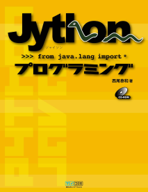

Jython(じゃいそん)はあなたのJavaプログラムに 「やわらかさ」を与えるライブラリです。
わずか数行書き足すだけで、このスペースではとても語り尽くせない
様々な「Pythonのよさ」を取り込むことができます。 そして何一つ機能を失いません。
既存のJavaのコードをPythonで書き直す必要なんかありません。
何も失わずに、二つの言語の「いいとこどり」ができるのです。
みなさんはどういう気持ちでこの本を手に取ったのでしょうか？どういう知識を持っていて、どういう知識を得たいと思っているのでしょうか？
みなさんのニーズを聞いてから、それに応えることができればいいのに…。しかし、書籍でそれをやるのは難しいです。しかたがないのでこちらで決めました。この本の最大の目的は「なるべく多くの人に新しい視点を提供すること」です。
すべてのものには長所と短所があります。Javaはとてもかたい言語です。きっちりかっちりした言語です。もちろんこれは長所です。しかし、短所でもあります。一方、Pythonはとてもやわらかい言語です。のんびりらくちんな言語です。もちろんこれも長所です。しかしやはり短所でもあります。
一つの言語だけしか知らないのでは、なにが長所でなにが短所かわかりません。何が本質でなにが枝葉なのかわかりません。複数の言語を学んで比較することで初めて、なにがプログラミングの本質であり、なにが特定の言語の特徴なのかが見えてきます。ある問題をJavaで解決する方法を知っているとしましょう。それはJavaだからできることでしょうか？それとも、他の言語でもできることでしょうか？はたまた、Javaの短所のせいでしかたなくその方法を使うだけで、別の言語ではもっとエレガントに解決できるのでしょうか？言語はそれぞれ特徴が違います。Javaはソースコードをコンパイルしてから実行しますが、Pythonでは対話的な実行ができます。Javaは宣言で変数を作りますが、Pythonは代入で変数を作ります。Javaではクラスが必須ですが、Pythonでは必須ではありません。Javaは単一継承に制限されていますが、Pythonでは多重継承ができます。Pythonを学ぶことはあなたの視野を大きく広げることになるでしょう。
Jythonのいいところは「別の言語を勉強したけど、でも今作っているJavaプログラムをPythonに移植するのはコストが高いな」といういいわけが使えないところにあります。Pythonを学んで、たとえば「対話的実行を自分のソフトでも使いたいなぁ」と思ったのなら、6章を参考にして対話的コンソールを埋め込みましょう。既存のJavaプログラムは捨てないで、数行書き足すだけで対話的に実行ができます。この本は「Javaを捨ててPythonに乗り換えろ」という本ではありません。「JavaオンリーよりJava + Pythonがいいよ」という本なのです。
この本の目的は、なるべく多くのJavaプログラマにPythonを知ってもらい、視野を広げてもらうことにあります。「なるべく多くの人に」という目的を果たすために、Python使いでもJavaのギークでもなく、Javaを始めて1年未満くらいの人をターゲットとして想定しました。ギークには物足りないかもしれません。すみません。JavaよりPythonがメインの方にも物足りないかもしれません。もっとJythonのAPIとかの解説が欲しいかもしれません。すみません。他にもいろいろと至らない点があるかと思います。すみません。
この本がみなさんの役に立つことを祈っています。